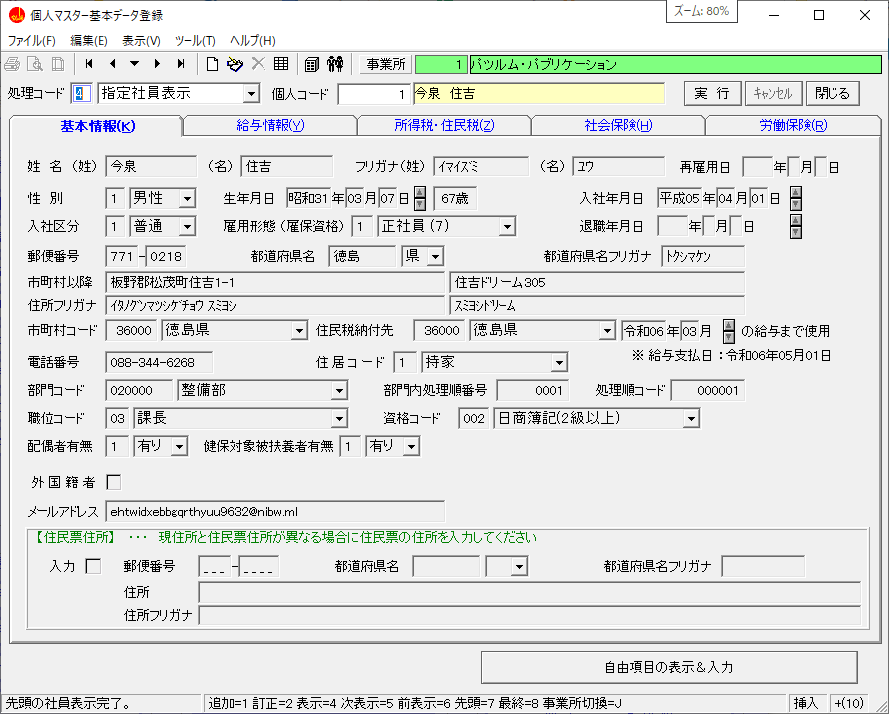
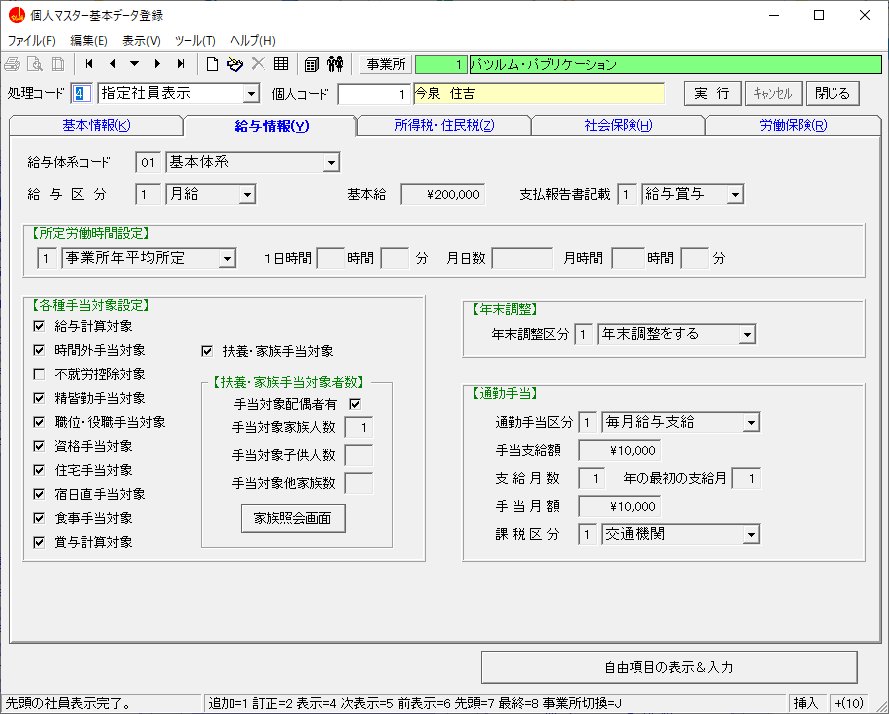
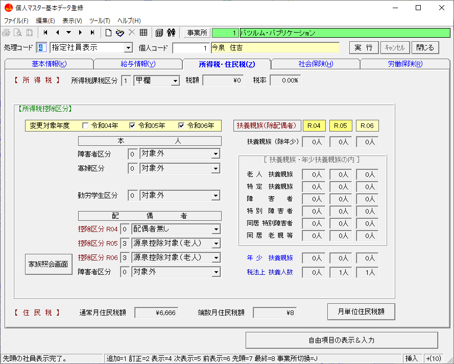
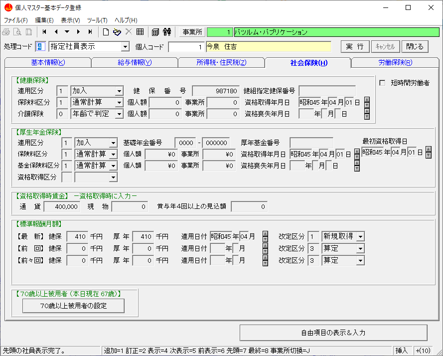
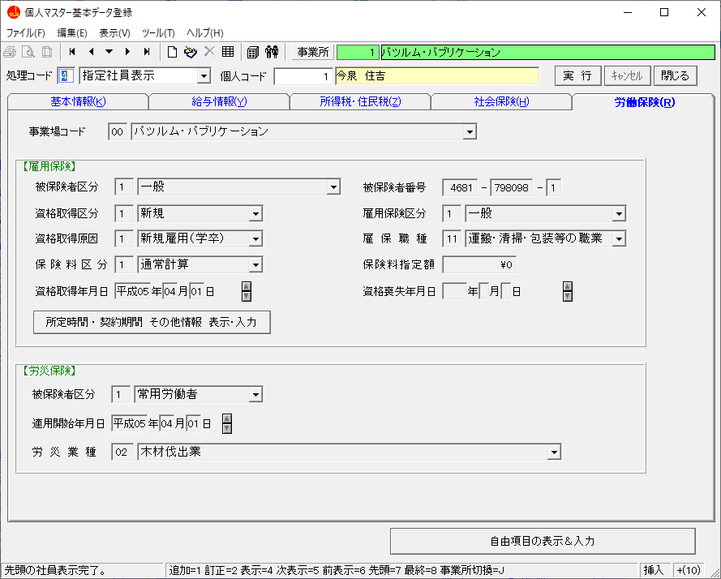

目 次
入社する社員の個人情報を登録して各種手続きができるようにします。
また、HR-Zeroを使用している場合は不足項目の登録を行います。
個人情報を登録することで入社に必要な書類の印刷ができるようになります。
目 次
社労法務システムにて入社した社員の個人情報を登録する流れとポイント
② 基本情報を登録する
氏名や性別、生年月日などの基本情報を登録します。
｜ポイント｜
① 氏名、フリガナ、性別、生年月日、入社日付、住所、電話番号などの基本情報は必ず入力する
② 市町村コードは郵便番号等で検索を行うと自動的にセットされますが、直接入力した場合は選択します。
市町村コードは給与計算での住民税納付や年末調整に使用されます
但し、共通情報管理の市区町村マスタ登録に登録されていない場合は市区町村名が表示されませんので市区町村マスタ登録にて登録を行います（後からでも登録できます）。
③ 住民税納付先は引っ越し等で１月１日時点で納付する市区町村と現在の市区町村が異なる場合に納付する市区町村などを入力する
④ 部門コードは事業所にて部門を管理している場合は入力する
部門内処理順番号は並び替えに使用されるので部門管理をする場合は重複しないように入力する
⑤ 住居コード、職位コード、資格コードは給与計算等に使用されますので必要に応じて入力する
職位コードは労使協定の代表者と労災申請の確認者の職名にも使用されます。
⑥ 外国籍者は外国籍の場合にチェックを付けることで入力できます。
入力については、外国人情報を登録するを参照
⑦ 住民票住所は現住所が住民票と異なる場合に入力する
健康保険・厚生年金保険の資格取得届と被扶養者異動届等で個人番号が記入できない場合に使用します。
③ 給与情報を登録する
給与計算等で使用される給与区分や基本給、通勤手当などの情報を登録します。
｜ポイント｜
① 給与区分は賃金を扱う処理にも使用されるので必ず入力する
② 給与計算を行う場合は基本給や通勤手当など他の項目も必要に応じて入力する
③ 所定労働時間設定は給与計算を行う際の所定労働日数と時間数の設定に使用されます。
・事業所年平均設定 → １年間の平均で設定されます。
・事業所当月実所定 → 支給月の実際の日数と時間数で設定されます。
・本人所定 → パートやアルバイトなどで本人の勤務状況に合わせた日数と時間数を入力する
④ 通勤手当は給与計算で通勤手当を支給する場合に入力する
⑤ 給与体系コードは給与計算において正社員とパートなどで支給される項目等が違う場合に様々な給与項目設定ができますので給与計算の状況により入力します。
④ 所得税・住民税情報を登録する
給与計算や年末調整等で使用される所得税と住民税の情報を登録します。
｜ポイント｜
① 所得税課税区分は一般的には甲欄を選択します。
二か所以上で勤務している場合は乙欄になる場合がありますので本人に確認します。
② 所得税課税区分は年度により登録されるので、本人と配偶者、家族の情報を入力します。
③ 扶養親族（除配偶者）は人数を入力します。
・家族情報を登録することで自動的に設定することができます。
・家族情報の登録は、家族情報を登録するを参照
・但し、登録時に家族を登録しなかった場合に結婚や出産等により家族が増えたりした場合に家族を登録すると扶養親族の人数が変わってしまうので注意すること
④ 住民税を通常月と端数月で入力します。
・途中入社などで通常月と端数月で入力が困難な場合等は月単位に登録することも可能です。
・月単位の登録は、月単位で住民税を登録する方法を参照
⑤ 社会保険情報を登録する
健康保険と厚生年金保険の加入状況と標準報酬月額情報を登録します。
｜ポイント｜
① 健康保険の加入状況や健保番号（被保険者整理番号）、資格取得年月日などを入力します。
給与計算を行う場合は保険料区分と介護保険区分は必ず入力します。
② 厚生年金保険の加入状況や基礎年金番号、資格取得年月日、資格取得区分などを入力します。
給与計算を行う場合は保険料区分は必ず入力します。
③ 短時間労働者は事業所が特定適用事業所の場合で短時間労働者に該当する場合は入力します。
事業所が特定適用事業所でない場合は入力できません。
④ 資格取得時賃金は資格取得届を申請する際に必要となりますので入力します。
通貨と現物を入力します。
⑤ 賞与を年４回以上支給する場合
・この場合の賞与は報酬として扱われるために標準報酬月額の基礎となります。
・年間に支払われる額を１２で割った金額を算定・月変などで各月に加算します。
・よって、賞与年４回以上の見込額に上記金額を入力します。
・また、資格取得届の通貨によるものの額にも含める必要があるので、通貨にも加算して入力します。
⑥ 標準報酬月額は資格取得時賃金を入力して「標準報酬月額（最新）に入力」をクリックする
標準報酬月額は履歴管理（最新・前回・前々回）にて管理されています。
⑦ ７０歳以上の方が入社されて７０歳以上被用者に該当する場合は入力します。
７０歳以上被用者の登録は、７０歳以上被用者情報を登録するを参照
⑥ 労働保険情報を登録する
健康保険と厚生年金保険の加入状況と標準報酬月額情報を登録します。
｜ポイント｜
① 雇用保険関係は加入状況を含めて必ず入力します。
・被保険者区分にて加入状況を入力します。
・雇用保険の資格取得区分と被保険者番号は下記を参照のこと
→ 初めて加入される場合または、被保険者でなくなってから７年以上が経過する場合
・・・資格取得区分は「新規」、被保険者番号は「0000-000000-0」を入力
→ 再就職等で再加入される場合
・・・資格取得区分は「再取得」、被保険者番号は被保険者証より入力
・保険料区分は給与計算を行う場合は必ず入力します。
・所定時間・契約期間・その他情報は、雇用保険のその他情報を登録するを参照
② 労働保険関係加入状況を含めて必ず入力します。
・被保険者区分にて加入状況を入力します。
・労災業種は事業所情報の「主となる労災業種」が最初に表示されます。
→ 複数の業種が存在する会社の場合は該当する業種を選択します。
HR-Zeroより社労法務システムの個人情報を受信する
① HR-Zeroより受信する
HR-Zero（My-Zero）より個人情報を受信する流れとポイント

データ受信（イージアZeroから社労法務システムへ）をクリック

事業所・個人データをクリック

お客様番号とユーザーIDを確認して、パスワードを入力

社労法務システムに受信する事業所を選択して検索をクリックします。

｜ポイント｜
① 受信する社員を選択します。
② 家族情報も受信する
配偶者や家族などの情報も受信する場合はチェックを付けます。
③ 「Esia-Zeroから受信」をクリック

｜ポイント｜
① 退職者の離職データについての注意喚起です。
「今後このメッセージを表示しない」にチェックを付けると今後は表示されません。

｜ポイント｜
① 選択された個人を確認します。
② 内容について不備がないか確認します。
③ 本人情報は個人情報から確認します。
④ 配偶者や家族情報は家族情報から確認します。
⑤ 問題なければ「取込」をクリック

｜ポイント｜
① 受信結果を確認します。
② 社労法務システムにて不足している個人情報を登録する
HR-Zero（My-Zero）より受信した個人情報より不足している情報を登録するポイント
① 基本情報を登録する
氏名や性別、生年月日などの基本情報を登録します。

｜ポイント｜
① 氏名、フリガナ、性別、生年月日、入社日付、住所、電話番号などの基本情報は必ず入力する
② 市町村コードは郵便番号等で検索を行うと自動的にセットされますが、直接入力した場合は選択します。
市町村コードは給与計算での住民税納付や年末調整に使用されます
但し、共通情報管理の市区町村マスタ登録に登録されていない場合は市区町村名が表示されませんので市区町村マスタ登録にて登録を行います（後からでも登録できます）。
③ 住民税納付先は引っ越し等で１月１日時点で納付する市区町村と現在の市区町村が異なる場合に納付する市区町村などを入力する
④ 部門コードは事業所にて部門を管理している場合は入力する
部門内処理順番号は並び替えに使用されるので部門管理をする場合は重複しないように入力する
⑤ 住居コード、職位コード、資格コードは給与計算等に使用されますので必要に応じて入力する
職位コードは労使協定の代表者と労災申請の確認者の職名にも使用されます。
⑥ 外国籍者は外国籍の場合にチェックを付けることで入力できます。
入力については、外国人情報を登録するを参照
⑦ 住民票住所は現住所が住民票と異なる場合に入力する
健康保険・厚生年金保険の資格取得届と被扶養者異動届等で個人番号が記入できない場合に使用します。
③ 給与情報を登録する
給与計算等で使用される給与区分や基本給、通勤手当などの情報を登録します。

｜ポイント｜
① 給与区分は賃金を扱う処理にも使用されるので必ず入力する
② 給与計算を行う場合は基本給や通勤手当など他の項目も必要に応じて入力する
③ 所定労働時間設定は給与計算を行う際の所定労働日数と時間数の設定に使用されます。
・事業所年平均設定 → １年間の平均で設定されます。
・事業所当月実所定 → 支給月の実際の日数と時間数で設定されます。
・本人所定 → パートやアルバイトなどで本人の勤務状況に合わせた日数と時間数を入力する
④ 通勤手当は給与計算で通勤手当を支給する場合に入力する
⑤ 給与体系コードは給与計算において正社員とパートなどで支給される項目等が違う場合に様々な給与項目設定ができますので給与計算の状況により入力します。
④ 所得税・住民税情報を登録する
給与計算や年末調整等で使用される所得税と住民税の情報を登録します。
｜ポイント｜
① 所得税課税区分は一般的には甲欄を選択します。
二か所以上で勤務している場合は乙欄になる場合がありますので本人に確認します。
② 所得税課税区分は年度により登録されるので、本人と配偶者、家族の情報を入力します。
③ 扶養親族（除配偶者）は人数を入力します。
・家族情報を登録することで自動的に設定することができます。
・家族情報の登録は、家族情報を登録するを参照
・但し、登録時に家族を登録しなかった場合に結婚や出産等により家族が増えたりした場合に家族を登録すると扶養親族の人数が変わってしまうので注意すること
④ 住民税を通常月と端数月で入力します。
・途中入社などで通常月と端数月で入力が困難な場合等は月単位に登録することも可能です。
・月単位の登録は、月単位で住民税を登録する方法を参照
⑤ 社会保険情報を登録する
健康保険と厚生年金保険の加入状況と標準報酬月額情報を登録します。
｜ポイント｜
① 健康保険の加入状況や健保番号（被保険者整理番号）、資格取得年月日などを入力します。
給与計算を行う場合は保険料区分と介護保険区分は必ず入力します。
② 厚生年金保険の加入状況や基礎年金番号、資格取得年月日、資格取得区分などを入力します。
給与計算を行う場合は保険料区分は必ず入力します。
③ 短時間労働者は事業所が特定適用事業所の場合で短時間労働者に該当する場合は入力します。
事業所が特定適用事業所でない場合は入力できません。
④ 資格取得時賃金は資格取得届を申請する際に必要となりますので入力します。
通貨と現物を入力します。
⑤ 賞与を年４回以上支給する場合
・この場合の賞与は報酬として扱われるために標準報酬月額の基礎となります。
・年間に支払われる額を１２で割った金額を算定・月変などで各月に加算します。
・よって、賞与年４回以上の見込額に上記金額を入力します。
・また、資格取得届の通貨によるものの額にも含める必要があるので、通貨にも加算して入力します。
⑥ 標準報酬月額は資格取得時賃金を入力して「標準報酬月額（最新）に入力」をクリックする
標準報酬月額は履歴管理（最新・前回・前々回）にて管理されています。
⑦ ７０歳以上の方が入社されて７０歳以上被用者に該当する場合は入力します。
７０歳以上被用者の登録は、７０歳以上被用者情報を登録するを参照
⑥ 労働保険情報を登録する
健康保険と厚生年金保険の加入状況と標準報酬月額情報を登録します。
｜ポイント｜
① 雇用保険関係は加入状況を含めて必ず入力します。
・被保険者区分にて加入状況を入力します。
・雇用保険の資格取得区分と被保険者番号は下記を参照のこと
→ 初めて加入される場合または、被保険者でなくなってから７年以上が経過する場合
・・・資格取得区分は「新規」、被保険者番号は「0000-000000-0」を入力
→ 再就職等で再加入される場合
・・・資格取得区分は「再取得」、被保険者番号は被保険者証より入力
・保険料区分は給与計算を行う場合は必ず入力します。
・所定時間・契約期間・その他情報は、雇用保険のその他情報を登録するを参照
② 労働保険関係加入状況を含めて必ず入力します。
・被保険者区分にて加入状況を入力します。
・労災業種は事業所情報の「主となる労災業種」が最初に表示されます。
→ 複数の業種が存在する会社の場合は該当する業種を選択します。


｜ポイント｜
下記項目は被扶養者異動届の申請に必要なので必ず入力します。
・職業
・収入 → 無職の場合は０を入力
・基礎年金番号 → 持っていない場合は不要
何を入力すればいいのか不明な項目は入力しなくてもOK
・被扶養者になった日
・被扶養者になった理由


② 社員情報を確認して、必要情報の入力を行い登録します

｜ポイント｜
① 社員からの情報を確認して、入力されていない項目や不備などがあれば、差戻しをしてください。
② 問題なければ、必要事項を入力する
必須項目は必ず入力すること
・社員番号（個人コード）
｜ポイント｜
→ 社労法務システムに登録するので、前ゼロは付けない
・入社年月日
・入社区分
・雇用形態
｜ポイント｜
→ 最初は「正社員」が選択されているので、パートなどの場合は正しく選択する
・賃金支払態様
｜ポイント｜
→ 月給者は「月給（遅早・欠勤控除なし）」を選択
→ 日給月給者は「月給（遅早・欠勤控除あり）」を選択
③ 外国籍者の場合は
『外国籍者に関する情報』を参照

｜ポイント｜
① 社員からの情報を確認して、入力されていない項目や不備などがあれば、差戻しをしてください。
② 問題なければ、必要事項を入力する
③ 健康保険と厚生年金保険の加入は必ず選択すること
「加入しない」を選択した場合、以下は入力不要
④ 必須項目は必ず入力すること
通貨によるものの額、現物によるものの額
⑤ 注意点
・社会保険の資格取得日は入社日と同じですか。
→ 一般的には資格取得日と入社日は同日ですので「はい」を選択します。
・備考と住所未記入理由
→ 資格取得届の申請にて必要ですが、社労法務システムでは使用していないので入力は任意です。

｜ポイント｜
① 社員からの情報を確認して、入力されていない項目や不備などがあれば、差戻しをしてください。
② 問題なければ、必要事項を入力する
③ 雇用保険の加入は必ず選択すること
「加入しない」を選択した場合、以下は入力不要
④ 全ての項目は必ず入力すること（備考は任意）
｜ポイント｜
① 雇用保険被保険者番号は初めて加入する場合
「0000-000000-0」を入力
② 適用事業所は事業所にて複数の事業場がある
場合に選択が必要
③ 下記項目は最初の項目が選択されているので、必要に応じて変更する
取得区分、被保険者種類、被保険者となったことの原因、職種、就職経路
④ 賃金月額は千円単位で入力すること
⑤ 契約期間の定めは有期契約などで定めがある場合に選択する

｜ポイント｜
① 社員からの情報を確認して、入力されていない項目や不備などがあれば、差戻しをしてください。
② 問題なければ、必要事項を入力する
③ 配偶者の所在地に関する情報
同居していない場合は内容を確認する
④ 配偶者の扶養に関する情報
扶養に入っている場合は内容を確認する
但し、被扶養者になった日と被扶養者になった理由は本人では入力できないので担当者が入力する
一般的には
・被扶養者になった日は本人の社会保険の資格取得日
・被扶養者になった理由は配偶者の就職
⑤ 配偶者の外国籍者に関する情報
外国籍者の場合は内容を確認する

｜ポイント｜
① 社員からの情報を確認して、入力されていない項目や不備などがあれば、差戻しをしてください。
② 問題なければ、必要事項を入力する
③ 家族の所在地に関する情報
同居していない場合は内容を確認する
④ 家族の扶養に関する情報
扶養に入っている場合は内容を確認する
但し、被扶養者になった日と被扶養者になった理由は本人では入力できないので担当者が入力する
一般的には
・被扶養者になった日は本人の社会保険の資格取得日
・被扶養者になった理由はその他を選択して理由を入力する
⑤ 家族の外国籍者に関する情報
外国籍者の場合は内容を確認する


{kind=link}
{kind=link}
{kind=link}
{kind=link}
{kind=link}
{kind=link}
{kind=link}
｜ポイント｜
新規登録を行う手順
① 処理コードに「１」を入力するか、新規社員追加登録を選択して実行ボタンをクリックする
② ツールバーの新規社員追加登録（）をクリックする